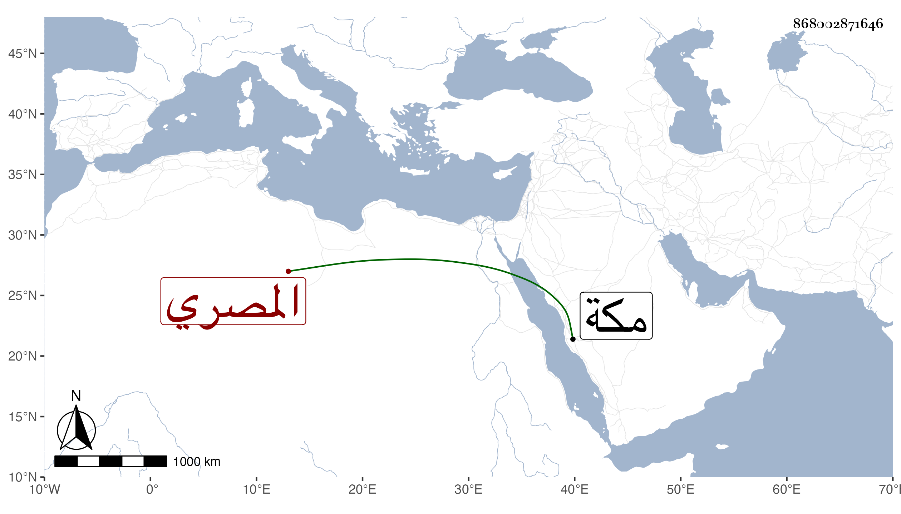

0902Sakhawi.DawLamic.ITO20230111-ara1.EIS1600.868002871646
Biography ID: 868002871646
302
عمر بن عبد العزيز بن أحمد بن محمد بن علي السراج بن العز بن الصلاح المصري أخو علي الماضي ووالد المحمدين الأربعة الشمس والشرف والعز والبدر وفخر الدين سليمان ويعرف بالخروبي . ولد سنة إحدى وأربعين وسبعمائة أو التي بعدها ولم أجد له سماعا على قدر سنه ولو اعتنى به لأدرك الأسناد ، وقد كان له حرص على السماع فسمع بقراءتي كثيرا ، وأول ما مات أبوه كان يعد من التجار ثم ورث هو وأخوه نور الدين والدهما فاتسع حاله وأثرى واشتهر بالمعرفة وحسن السيرة ثم تناقص حاله فمات عمه تاج الدين محمد بمكة في سنة خمس وثمانين وسبعمائة وأوصى إليه وورث منه فأثرى واتسع حاله ثم تناقص إلى أن مات قريبه محمد بن زكي الدين الخروبي في سنة أربع وستين وهو شاب فورث منه مالا جزيلا فتراجع حاله ثم تناقص إلى أن مات أخوه نور الدين فورث ماله واتسعت دائرته وحسن حاله ثم تناقص حاله بعد ثلاث سنين إلى أن ماتت أخته آمنة فورث منها مالا جزيلا فحسنت حاله ووفى كثيرا من دينه ولم يزل بسوء تدبيره إلى أن مات فقيرا إلا أن ابنته فاطمة ماتت قبله بيسير فورث منها شيئا حسنت به حاله قليلا ولكنه مات وعليه ديون كثيرة في سنة خمس وعشرين وقد جاز الثمانين ممتعا بسمعه وبصره وعقله ، وكان كثير العبادة من صلاة وصوم وأذكار ، وتنقلت به الأحوال ما بين غنى مفرط وفقر مدقع كما شرحناه رحمه الله . ذكره شيخنا في أنبائه .
